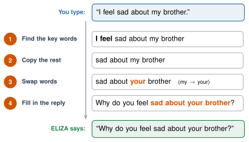
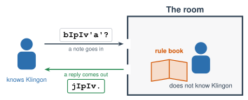

1.3 - The First Chatbot
In 1966, people at a university in Massachusetts talked to a computer program named ELIZA. ELIZA acted like a counselor. Some people told it their secrets. Some people believed it understood them.
ELIZA understood nothing. It followed a list of rules that one person wrote.
Today, you play ELIZA yourself and see how it works. Then you act out a famous puzzle: a person who answers notes in a language they don’t know.
Today’s Plan (40 minutes)
- 🔥 Warm Up Be ELIZA 7 min
- 👥 Learn Together How ELIZA works 8 min
- 🧪 Try It The Klingon Room 18 min
- 💬 Talk About It Does it understand? 7 min
- 🔑 key word: a word that a program looks for to decide what to do
- 📏 rule: an exact instruction, like “If this happens, do that.”
- 🪞 ELIZA effect: when people feel that a computer understands them, but it doesn’t
- 💡 understand: to know what something means, not only what it looks like
Printable lesson sheet - the sheet you write on today.
Klingon Room rule book and note cards - print one set for each group.
🔥 Warm Up
Work with a partner (or a group of 3, taking turns). One of you is ELIZA. ELIZA can only answer with the rule card. ELIZA can’t think of anything new!
| If your partner says … | ELIZA says … |
|---|---|
| I feel ___ | Why do you feel ___? |
| I am ___ | How long have you been ___? |
| I want ___ | Why do you want ___? |
| a word about family | Tell me more about your family. |
| anything else | Please go on. |
- Your partner tells ELIZA about their day. Talk for 3 turns.
- Switch jobs.
Being ELIZA is easy. You don’t need to understand anything. You only look for the key words and follow the card.
Sometimes ELIZA’s answer sounds caring. Sometimes it sounds strange. ELIZA can’t tell the difference.
👥 Learn Together
1.3.1 - How ELIZA Works
ELIZA was made in 1966 by Joseph Weizenbaum, a professor at MIT. ELIZA doesn’t learn. Weizenbaum wrote every rule by hand. Here is how ELIZA answers one sentence:

- ELIZA looks for key words. It doesn’t know what the words mean.
- If no rule matches, ELIZA says something that fits anything, like “Please go on.”
- ELIZA is a normal program: a person wrote the rules (like the calculator in Lesson 1.1).
Here is a real conversation with ELIZA. Find one answer where ELIZA copied your words and swapped “my” for “your.”
![White text on a dark screen. A large ELIZA title. ELIZA: Is something troubling you? YOU: Men are all alike. ELIZA: What is the connection, do you suppose? YOU: They're always bugging us about something or other. ELIZA: Can you think of a specific example? YOU: Well, my boyfriend made me come here. ELIZA: Is it important to you that your boyfriend made you come here? YOU: He says I'm depressed much of the time. ELIZA: I am sorry to hear that you are depressed. YOU: It's true. I am unhappy. ELIZA: Can you explain what made you unhappy?](../../images/Unit_1/1.3_eliza_conversation.png)
1.3.2 - People Believed It
Weizenbaum’s secretary knew that ELIZA was only a program. She watched him build it. But one day, she was chatting with ELIZA. She asked Weizenbaum to leave the room so she could talk to it alone.
Many people felt that ELIZA understood them. Today, we call this the ELIZA effect.
🛠️ Try It
1.3.3 - The Chinese Room
A philosopher named John Searle asked people to imagine this:
- A person sits in a closed room. They do not know the language of the notes.
- Notes come in through a slot.
- The person has a rule book. It says: “If you see these shapes, send back those shapes.”
- The person finds the shapes and copies the reply. They pass it out.
- Outside, people who know the language read the replies. The replies make sense! They think someone in the room knows the language.
Does anyone in the room understand the language?
Act it out: the Klingon Room. Searle imagined notes in Chinese, a language he couldn’t read. We’ll use Klingon. It’s a language made up for the Star Trek TV shows and movies. (Some fans really speak it!)

Work in a group of 2 to 4: one person in the room, the rest outside. Each group needs one rule book and one set of note cards. (Only 4 in class? Be one group, and take turns going in the room.)
- One person is in the room. Sit behind a folder or a book so the others can’t see you. Take the rule book.
- Everyone else is outside. Share the note cards. Fold back the English part.
- Pass one note into the room. The person in the room finds the note that looks exactly the same in the rule book. They copy the reply on the back. Pass it out.
- Outside: check the reply with the English on your card. Does it make sense?
- Pass in at least 6 notes. Then switch: a new person goes in the room.
The room answered: “Yes. I am learning Klingon.”
But the person in the room doesn’t know any Klingon. The answer sounds right, and it is not true.
Now look at the note about the bathroom. The room said: “I don’t understand.” That one is true! But the room only said it because a rule told it to.
Look at three notes: bIpIv'a'?, bIghung'a'? and bIQuch'a'?. Each reply sends the same word back, but bI becomes jI: jIpIv, jIghung, jIQuch.
In Klingon, bI means “you” and jI means “I.” It’s the same swap ELIZA makes, when “my” becomes “your.”
If you were in the room, maybe you started to guess replies without the book. You found a pattern. Did you understand any more Klingon?
💬 Talk About It
Searle said: the person in the room doesn’t understand the language. They only follow rules. A computer is the same. It follows rules, so it doesn’t understand anything.
Other people disagree. They say: maybe the person doesn’t understand, but the whole room (the person plus the book) does.
What do you think?
- The person in the room does / does not understand Klingon, because …
- The whole room does / does not understand Klingon, because …
- ELIZA is like the Klingon Room because …
- When I was in the room, I could guess some replies because …
- Today’s chatbots are like / not like the Klingon Room, because …
🚀 Go Further
- Chat with ELIZA below for 2 minutes.
- Check the box Show which rule ELIZA used. Chat some more. Which rules does ELIZA use most?
- Break ELIZA. Write something that makes ELIZA give a strange answer.
- Open ELIZA’s rules. Add a new rule. Test it! (Example: when someone says
i like *, ELIZA saysWhy do you like *?) - Add a rule in your home language. Does ELIZA answer you now? Why did ELIZA not understand your language before?
📜 ELIZA's rules (open to read them and add your own)
ELIZA checks the rules from the top. It uses the first rule that matches. A * means "the rest of the sentence." Put | between replies to give ELIZA a choice. Put / between words that mean the same thing, like mom/mother.
Don’t tell ELIZA anything private. It’s a game. (Nothing you type here leaves your computer.)
If you need to talk about something real, talk to a person: a teacher, the school counselor, or your family.
With your group, write 10 new rules for a different job: a school helper, a soccer fan, or a food expert. Add them to ELIZA.
Then let another group chat with your ELIZA. How many turns until it says something strange?
Type the same sentence to ELIZA and to your class AI tool. Try: I feel nervous about my test.
Compare the two answers. Which one sounds like it understands? Does either one really understand?
🔭 Explore More: the man who made ELIZA, and why he worried. Read it on your own, if you want to learn more.